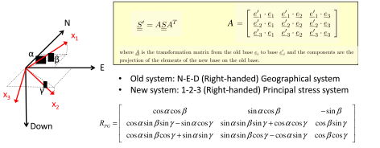
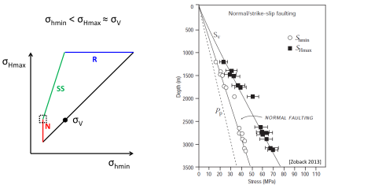

Next: 6. Wellbore Stability Up: Introduction to Energy Geomechanics Previous: 4. Rock Yield and Failure Contents
Changes of stresses in the subsurface lead to deformation of geological structures. Deformations can be grouped in (1) gradual and continuous, such as folding that creates an anticline, and (2) abrupt and discontinuous, such as faults. The creation of fault discontinuities depends on loading strain rate and rock properties including rock brittleness. Faults are the result of brittle rock failure in shear at the large scale (Fig. 5.1).
Faults usually cut through several sedimentary strata (See outcrop fault examples in Fig. 5.2). Faults are important in energy geomechanics because they limit the magnitude of horizontal stresses, may constitute structural traps for fluid flow, favor reservoir compartmentalization, and other times create high permeability conduits for fluid flow. A map of faults and rock units in Texas is available here: https://txpub.usgs.gov/txgeology/.
Faults in subsurface formations are usually mapped through seismic reconstruction (see example in Fig. 5.3) and wellbore imaging.
Fig. 5.4-a shows the typical signature of fractures in a wellbore. An anomaly of electrical resistivity or ultrasonic P-wave velocity facilitates recognizing the fracture (dark pixels in the image). The reconstruction of this image (Fig. 5.4-b) helps measure fracture orientation (strike and dip - Fig. 5.4-c).
Comprehensive fracture mapping helps create 3D reservoir models that account for fault and fracture geomechanics (5.5). The magnitude of shear and normal stresses on faults and fractures depends on their orientation respect to the in-situ stress tensor.
Imagine any plane (such as the plane shown in Fig. 5.6) cutting horizontal sedimentary strata.
The strike is the line which results from the intersection of such plane and a horizontal plane.
The magnitude of the strike is the angle between the strike line and the north.
The angle of dip is the angle between a horizontal plane and the plane under consideration.
A layer is said to dip in a given direction when it gets deeper at the fastest rate into such direction.
One can think of the  as the direction of a droplet of water moving down on such plane.
as the direction of a droplet of water moving down on such plane.
There are two conventions for reporting the magnitude of strike.
 . The quadrant convention is useful in the field. For example:
E” means 45 clockwise from the North towards the East
W” means 45 clockwise from the South towards the West
E” is the same as “S45W” (Figure 5.7)
measured from the North to the strike “vector” in clockwise direction (see Figure 5.24). The azimuth convention is most useful for data analytics and mathematical implementation. For example:
” for a a fault strike N45E and dipping SE.
” for a a fault strike N45E and dipping NW.
. The quadrant convention is useful in the field. For example:
E” means 45 clockwise from the North towards the East
W” means 45 clockwise from the South towards the West
E” is the same as “S45W” (Figure 5.7)
measured from the North to the strike “vector” in clockwise direction (see Figure 5.24). The azimuth convention is most useful for data analytics and mathematical implementation. For example:
” for a a fault strike N45E and dipping SE.
” for a a fault strike N45E and dipping NW.
![\includegraphics[scale=0.65]{.././Figures/split/6-StrikeConvention.PNG}](img659.svg) |
The dip is the angle between a horizontal plane and the line of maximum slope in the measured plane.
It is reported with angles between 0 and 90.
The maximum dip is 90 (vertical plane).
If the layer/fault is tipped even further it is said to be overturned.
The dip is usually accompanied by the direction in which the plane is dipping in quadrant notation.
For example, the plane in Fig. 5.6 dips about 60SE, 60 degrees toward the South-East.
Stereonets are very useful for plotting the orientation of many faults in a single 2D plot 5.8. The stereonet represents a fault plane by a dot, which is the intersection of a line normal to the fault plane and a lower hemisphere projection. Visit this website for an online animation of stereonets: https://app.visiblegeology.com/stereonetApp.html.
 |
The geological map of a single formation, say a sandy layer formation, plots the top of such formation with depth in contour lines (Fig. 5.9b). Faults can also be represented in geological maps. Normal faults are represented as thick lines with thickness proportional to the heave of the fault (Fig. 5.9c). Reverse and thrust faults (negative heave) are plotted as lines with intermittent triangles on the dipping side (Fig. 5.9d). Fig. 5.10 shows an example application of this convention to the North Sea.
Strike and dip of sedimentary strata can be reported in geological maps as shown in Fig. 5.11.
At the large scale, the Earth's crust is constituted by “already broken" rock layers.
These discontinuities are comprised mostly of faults.
The cementation or cohesive strength of faults is negligible because the rock is already broken at those interfaces.
Hence, a large block of rock does not have any cohesive strength or “unconfined compression strength”.
As a result, its shear strength depends only on frictional strength according to the Coulomb frictional criterion (Fig. 5.12).
You may think of “El Capitán” rock cliff (https://www.reviewjournal.com/wp-content/uploads/2018/06/10646363_web1_yosemite-fatal-fall_6053325.jpg) as an example of a rock mass, strong and continuous, but that is an exception, not the rule.
Furthermore, the size of “El Capitán” ( 900 m 3000 ft) is smaller than the size of sedimentary basins ( 100 km and bigger).
900 m 3000 ft) is smaller than the size of sedimentary basins ( 100 km and bigger).
Because of the lack of cohesive strength of the Earth's crust at the large scale, its shear strength just depends on frictional strength through the friction coefficient  (or equivalent friction parameter ). The coefficient
(or equivalent friction parameter ). The coefficient  is the internal frictional angle of rock before rupture, while is the friction coefficient after initial rupture.
Hence, the shear strength of large blocks in the Earth's crust is simply
is the internal frictional angle of rock before rupture, while is the friction coefficient after initial rupture.
Hence, the shear strength of large blocks in the Earth's crust is simply
 |
(5.1) |
which can be rewritten in terms of principal stresses as
 |
(5.2) |
where
 |
(5.3) |
For typical friction coefficients the coefficient varies from 3 to 7. This means that the maximum ratio between maximum principal effective stress and minimum principal effective stress is
 3 to 7 (See Table 5.1).
This ratio is usually called “(effective) stress anisotropy”.
3 to 7 (See Table 5.1).
This ratio is usually called “(effective) stress anisotropy”.
The maximum allowable stress anisotropy in a geological formation depends on its shear strength. Faults form or reactivate when this stress anisotropy, and therefore shear strength, is surpassed.
 implies no fault slip.
implies no fault slip.
A normal fault is caused by in-situ stress conditions in which
 |
(5.4) |
 .
These stress conditions are typical of tectonically passive and laterally extensional environments.
For example, the Permian Basin in Texas is mostly under normal faulting stress regime.
The fault plane is a shear rupture plane. Its orientation is (
.
These stress conditions are typical of tectonically passive and laterally extensional environments.
For example, the Permian Basin in Texas is mostly under normal faulting stress regime.
The fault plane is a shear rupture plane. Its orientation is (
 ) in vertical direction from the horizontal plane (the plane perpendicular to
) in vertical direction from the horizontal plane (the plane perpendicular to  ) to the plane of
) to the plane of  .
The blocks move along the direction of and do work against .
At any point in the fault, the block above the fault is called the “hanging-wall” and the block below is the “footwall” (Fig. 5.13).
.
The blocks move along the direction of and do work against .
At any point in the fault, the block above the fault is called the “hanging-wall” and the block below is the “footwall” (Fig. 5.13).
Normal faults usually occur in pairs. Notice that the shear failure angle includes two possible solutions (for ). These are called conjugate solutions. The block that moves down in between two normal conjugate faults is termed “graben”, while the ones that move up relative to the footwall are called “horst” (Fig. 5.14). These geological structures occur frequently in hydrocarbon systems with structural fault traps.
A thrust fault is caused by in-situ stress conditions in which
| (5.5) |
These stress conditions are typical of locations with high compressive tectonic strains.
For example, sedimentary basins close to the Andes and Himalayas foothills are under reverse faulting regime.
The fault plane is a shear rupture plane.
Its orientation is
in vertical direction from a vertical plane perpendicular to  to the plane of
to the plane of  (Fig. 5.15).
The blocks move along the direction of and do work against gravity (surface uplift).
As with normal faulting, the block above the fault is called the “hanging-wall” and the block below the “footwall”.
(Fig. 5.15).
The blocks move along the direction of and do work against gravity (surface uplift).
As with normal faulting, the block above the fault is called the “hanging-wall” and the block below the “footwall”.
A fault that may have been caused by paleo-stresses corresponding to a normal stress regime, but now moves according to in-situ stress conditions of a thrust fault stress environment is termed a reverse fault (Fig. 5.16).
A strike-slip fault is caused by in-situ stress conditions in which
| (5.6) |
These stress conditions are typical of high compressive tectonic strains mostly in one direction.
Some sedimentary basins around the Rocky Mountains and near California are under strike slip regime.
The fault plane is a shear rupture plane and it is vertical. Its orientation is
in horizontal direction from a vertical plane perpendicular to towards a plane perpendicular to .
The schematic in Fig. 5.17 shows an oblique fault, not a pure strike-slip fault.
The fault is called strike-slip, because it slips in horizontal direction, in the direction of the fault strike.
Notice that oblique faults move with a combination of vertical and horizontal displacements.
The type of fault that occurs for each stress combination gives rise to the name of the stress faulting regime (Table 5.2). Notice that stresses may change in magnitude and direction with time at a given location (see stress map in Fig. 5.18 - other maps available at http://www.world-stress-map.org/). Furthermore, the same location may evolve through different stress regimes over geological periods of time. The stress regime can also change with depth at the same location. Changes of stress regime with depth are critical for defining the geometry of fluid-driven fractures.
![\includegraphics[scale=0.65]{.././Figures/split/6-18.pdf}](img687.svg) |
The ideal orientation of a hydraulic fracture is a plane perpendicular to the minimum principal stress  direction.
Similarly, we can also tell what would be the orientation of ideal conjugate pairs of shear fractures (faults) for a given state of stress.
The dip and strike will depend on
direction.
Similarly, we can also tell what would be the orientation of ideal conjugate pairs of shear fractures (faults) for a given state of stress.
The dip and strike will depend on  , , and the friction angle
, , and the friction angle  (Fig. 5.20).
Such ideal conjugate pair of shear fractures would be located:
(Fig. 5.20).
Such ideal conjugate pair of shear fractures would be located:
and ,
 ,
from the plane perpendicular to towards the plane perpendicular to .
,
from the plane perpendicular to towards the plane perpendicular to .
![\includegraphics[scale=0.50]{.././Figures/split/6-IdealFaultOrientationGC.pdf}](img688.svg) |
Notice that all these angles vary according to the stress regime. Faults formed in NF stress regime tend to be steep. Faults formed in RF stress regime are not too steep. Faults formed in SS stress regime are vertical.
 |
PROBLEM 5.1: Find the ideal orientation of a hydraulic fracture and faults (shear fractures) at a location subjected to the following state of stress and conditions:
is a principal stress
is N60W
= 30.
SOLUTION
First, recognize the planes of and and their orientations with respect to the geographical coordinate system.
The plane of in this case is a horizontal plane ( plane, a principal stress) and the plane of is a vertical plane perpendicular to .
![\includegraphics[scale=0.75]{.././Figures/split/6-IdealFracP1.pdf}](img689.svg)
A hydraulic fracture would be perpendicular to , in this case . Hence, the strike is
 and the dip is
and the dip is
 because is horizontal.
because is horizontal.
The dip of faults depends on the friction angle. In this case, the failure angle is:
 going from the plane of to the plane of .
Thus, the strike of the two possible faults is
and the dips are
going from the plane of to the plane of .
Thus, the strike of the two possible faults is
and the dips are
 SE and
NW.
SE and
NW.

PROBLEM 5.2: Find the ideal orientation of a hydraulic fracture and faults (shear fractures) at a location subjected to the following state of stress and conditions:
is a principal stress
is 010
= 40.
SOLUTION
First, recognize the planes of and and their orientations with respect to the geographical coordinate system.
The plane of in this case is a vertical plane ( plane) and the plane of is another vertical plane perpendicular to .
![\includegraphics[scale=0.75]{.././Figures/split/6-IdealFracP2.pdf}](img695.svg)
A hydraulic fracture would be perpendicular to , in this case . Hence, the strike is
 and the dip is
because is horizontal.
and the dip is
because is horizontal.
The dip of faults depends on the friction angle. In this case, the failure angle is:
 going from the plane of to the plane of .
Thus, the strikes of the two possible faults are
going from the plane of to the plane of .
Thus, the strikes of the two possible faults are
 and
and
 , the dip is
, the dip is
 .
.
In this section we will review two methods to calculate normal and shear stresses on fractures and faults. The first part reviews the Mohr circle method in order to have a conceptual understanding of stress projection on faults and maximum ratio between shear stress and effective normal stress. The second part discusses the tensor method, which requires the definition of three coordinate systems and matrix multiplication. The tensor method can be easily implemented in a computer script but is laborious to work out manually.
The 3D Mohr circle is a graphical representation of the stress tensor and all its projections (or possibles values of normal effective stress  and shear stress ) on a given plane.
Consider a horizontal plane in Fig. 5.21, the normal stress is the vertical stress and there is no shear stress.
Consider a vertical plane with strike East-West in Fig. 5.21, you get the minimum principal stress .
Consider a vertical plane with strike North-South in Fig. 5.21, you get the maximum principal stress .
and shear stress ) on a given plane.
Consider a horizontal plane in Fig. 5.21, the normal stress is the vertical stress and there is no shear stress.
Consider a vertical plane with strike East-West in Fig. 5.21, you get the minimum principal stress .
Consider a vertical plane with strike North-South in Fig. 5.21, you get the maximum principal stress .
Likewise, non-trivial solutions of stress projection at an arbitrary plane angle include all the points delimited by the three Mohr circles. Let's consider solutions along each circle in Fig. 5.21.
 ) represents the possible state of stresses that result as a combination of
) represents the possible state of stresses that result as a combination of  and
and
 . The shear stress and normal effective stress of any plane in between the planes of and
and colinear with
. The shear stress and normal effective stress of any plane in between the planes of and
and colinear with
 can be found through the angle
can be found through the angle  measured from .
measured from .
 ) represents the possible state of stresses that result as a combination of
) represents the possible state of stresses that result as a combination of
 and
. The shear stress and normal effective stress of any plane in between the planes of
and
and colinear with
can be found through the angle
and
. The shear stress and normal effective stress of any plane in between the planes of
and
and colinear with
can be found through the angle  measured from
measured from
 ) represents the possible state of stresses that result as a combination of
and
. The shear stress and normal effective stress of any plane in between the planes of
and
and colinear with
can be found through the angle measured from
) represents the possible state of stresses that result as a combination of
and
. The shear stress and normal effective stress of any plane in between the planes of
and
and colinear with
can be found through the angle measured from
For this example (normal faulting, azimuth E-W), an ideal fault would occur with a strike E-W and dip 60 (assuming
 ). This is the orientation of a plane with maximum
). This is the orientation of a plane with maximum
 .
.
PROBLEM 5.3: Find the shear and normal effective stresses on a fault plane within the following state of stress and conditions:
, dip = 60.
 23 MPa (principal),
23 MPa (principal),
 20 MPa,
13.8 MPa (azimuth: 090), and
20 MPa,
13.8 MPa (azimuth: 090), and  10 MPa.
10 MPa.
SOLUTION
![\includegraphics[scale=0.65]{.././Figures/split/6-3DMohrCircleP1.pdf}](img709.svg)
 13 MPa,
13 MPa,
 10 MPa,
10 MPa,
 3.8 MPa.
Based on the Mohr circle of with
and trigonometry:
3.8 MPa.
Based on the Mohr circle of with
and trigonometry:


PROBLEM 5.4: Find the shear and normal effective stresses on a fault plane within the following state of stress and conditions:
E, dip: 90.
30 MPa (principal),
45 MPa,
25 MPa (azimuth: N30E), and 15 MPa.
SOLUTION
![\includegraphics[scale=0.65]{.././Figures/split/6-3DMohrCircleP2.pdf}](img715.svg)
The effective stresses are:
15 MPa,
30 MPa,
10 MPa.
Based on the Mohr circle of
with
and trigonometry:


This subsection describes the procedure to calculate stresses
on an arbitrary plane given its orientation respect to the geographical coordinate system
 and the in-situ stress tensor of principal stresses
and the in-situ stress tensor of principal stresses
 (given its principal values and principal directions).
(given its principal values and principal directions).
The first step consists on defining the principal stress coordinate system and the geographical coordinate system (both right-handed coordinate systems).
,
for , and
for (Fig. 5.22). The stress tensor is termed
in this coordinate system.
The second step involves constructing a change of basis matrix  from the Principal Stress to the Geographical Coordinate system.
This matrix depends on the projections of the elements of the new base on the old base according to the cosines of the director angles , , and
from the Principal Stress to the Geographical Coordinate system.
This matrix depends on the projections of the elements of the new base on the old base according to the cosines of the director angles , , and  (Fig. 5.23).
Table 5.3 summarizes the meaning of , , and for cases in which vertical stress is a principal stress.
(Fig. 5.23).
Table 5.3 summarizes the meaning of , , and for cases in which vertical stress is a principal stress.
 |
| Normal faulting | Strike slip | Reverse faulting | |
| Azimuth of |
Azimuth of |
Azimuth of |
|
|
 |
 |
|
|
|
|
|
Check out this link https://mybinder.org/v2/gh/johntfoster/rotation_widget/master?filepath=rotation_widget-rise.ipynb for an animation of , , and in arbitrary directions.
With the matrix , we can calculate the stress tensor
as a function of
,
 |
(5.8) |
and therefore:
where the superscript stands for “transpose”.
PROBLEM 5.5: Calculate
in a normal faulting stress regime case ( MPa, MPa,
MPa, MPa,  MPa) with azimuth of N-S. is a principal stress.
MPa) with azimuth of N-S. is a principal stress.
SOLUTION
The principal stress tensor is
Using Table 5.3 and considering that , the angles of the principal stress coordinate result
 ,
,
 , and
.
The change of coordinate system matrix results
, and
.
The change of coordinate system matrix results
![\begin{displaymath}R_{PG}
=
\left[
\begin{array}{ccc}
0 & 0 & -1 \\
0 & 1 & 0 \\
1 & 0 & 0
\end{array}\right]\end{displaymath}](img736.svg) |
Finally, using equation 5.9
![\begin{displaymath}\uuline{S}{}_G
=
\left[
\begin{array}{ccc}
0 & 0 & -1 \\
0 &...
...0 & 25 & 0 \\
0 & 0 & 30
\end{array}\right]
\: \: \blacksquare\end{displaymath}](img737.svg) |
PROBLEM 5.6: Calculate
in a strike-slip faulting stress regime case ( MPa, MPa, MPa) with azimuth of N-S. is a principal stress.
SOLUTION
The principal stress tensor is
Using Table 5.3 and considering that
 and
and  , the angles of the principal stress coordinate result
,
, the angles of the principal stress coordinate result
,
 , and
, and
 .
The change of coordinate system matrix results
.
The change of coordinate system matrix results
![\begin{displaymath}R_{PG}
=
\left[
\begin{array}{ccc}
1 & 0 & 0 \\
0 & 0 & 1 \\
0 & -1 & 0
\end{array}\right]\end{displaymath}](img740.svg) |
Finally, using equation 5.9
PROBLEM 5.7: Calculate
in a reverse faulting stress regime case ( MPa, MPa, MPa) with azimuth of E-W. is a principal stress.
SOLUTION
The principal stress tensor is
Using Table 5.3 and considering that
and
 , the angles of the principal stress coordinate result
,
, and
.
The change of coordinate system matrix results
, the angles of the principal stress coordinate result
,
, and
.
The change of coordinate system matrix results
![\begin{displaymath}R_{PG}
=
\left[
\begin{array}{ccc}
0 & 1 & 0 \\
-1 & 0 & 0 \\
0 & 0 & 1
\end{array}\right]\end{displaymath}](img743.svg) |
Finally, using equation 5.9
![\begin{displaymath}\uuline{S}{}_G
=
\left[
\begin{array}{ccc}
0 & 1 & 0 \\
-1 &...
...0 & 30 & 0 \\
0 & 0 & 20
\end{array}\right]
\: \: \blacksquare\end{displaymath}](img744.svg) |
PROBLEM 5.8: Calculate
in a strike-slip faulting stress regime case ( MPa, MPa, MPa) with azimuth of being 135. is a principal stress.
MPa, MPa, MPa) with azimuth of being 135. is a principal stress.
SOLUTION
The principal stress tensor is
![\begin{displaymath}\uuline{S}{}_P
=
\left[
\begin{array}{ccc}
60 & 0 & 0 \\
0 & 40 & 0 \\
0 & 0 & 35
\end{array}\right]\end{displaymath}](img748.svg) |
Using Table 5.3 and considering that
and , the angles of the principal stress coordinate result
,
, and
.
The change of coordinate system matrix results
![\begin{displaymath}R_{PG}
=
\left[
\begin{array}{ccc}
-0.707 & 0.707 & 0 \\
0 & 0 & 1 \\
0.707 & 0.707 & 0
\end{array}\right]\end{displaymath}](img750.svg) |
Finally, using equation 5.9
![\begin{displaymath}\uuline{S}{}_G
=
\left[
\begin{array}{ccc}
-0.707 & 0.707 & 0...
...& 47.5 & 0 \\
0 & 0 & 40
\end{array}\right]
\: \: \blacksquare\end{displaymath}](img751.svg) |
The third step consists in defining the fault plane coordinate system.
The coordinate system basis is comprised of  (dip),
(dip),  (strike), and (normal) vectors: d-s-n right-handed basis.
The three vectors depend solely in two variables:
(strike), and (normal) vectors: d-s-n right-handed basis.
The three vectors depend solely in two variables:  and of the fault.
and of the fault.
The fourth step (and last) consists in projecting the stress tensor based on the geographical coordinate system onto the fault base vectors.
The stress vector acting on the plane of the fault is (note that is not necessarily aligned with
 ,
,
 or
or
 ) and is calculated according to:
) and is calculated according to:
| (5.10) |
The total normal stress on the plane of the fault is (aligned with
):
 |
(5.11) |
The effective normal stress on the fault plane is
 .
The shear stresses on the plane of the fault is aligned with
and
are:
.
The shear stresses on the plane of the fault is aligned with
and
are:
 |
(5.12) |
The dot product is used in all these vector to vector multiplications. The geometrical meaning is the projection of one vector onto the other.
The effective normal stress and absolute shear
 can also be calculated with the following equations:
can also be calculated with the following equations:
 |
(5.13) |
| (5.14) |
The  is the angle of the shear stress
is the angle of the shear stress
 with respect to
(horizontal line) and quantifies the direction of expected fault movement in the fault plane.
with respect to
(horizontal line) and quantifies the direction of expected fault movement in the fault plane.
 |
(5.15) |
PROBLEM 5.9: Calculate , ,  ,
,  , and for a fault with strike 000 and dip 60E in a place with normal faulting stress regime (
, and for a fault with strike 000 and dip 60E in a place with normal faulting stress regime ( MPa,
MPa,
 MPa,
MPa) with azimuth of equal to 90. is a principal stress.
MPa,
MPa) with azimuth of equal to 90. is a principal stress.
SOLUTION
The tensor of principal stresses is
![\begin{displaymath}\uuline{S}{}_P
=
\left[
\begin{array}{ccc}
23 & 0 & 0 \\
0 & 15 & 0 \\
0 & 0 & 13.8
\end{array}\right]\end{displaymath}](img777.svg) |
Using Table 5.3 and considering that and the azimuth of is 90, the angles of the principal stress coordinate result
,
, and
.
The change of coordinate system matrix results
and the total stress in the geographical coordinate system results
![\begin{displaymath}\uuline{S}{}_G
=
\left[
\begin{array}{ccc}
15 & 0 & 0 \\
0 & 13.8 & 0 \\
0 & 0 & 23
\end{array}\right]\end{displaymath}](img779.svg) |
Given the orientation of the fault, the vector normal to the fault is
![\begin{displaymath}\uline{n}{}_n
=
\left[
\begin{array}{c}
0 \\
0.867 \\
-0.5
\end{array}\right]\end{displaymath}](img780.svg) |
Finally, the stresses on the fault are
MPa.
 MPa
MPa
MPa
MPa
= 90
PROBLEM 5.10: Calculate , , , , and for a fault with strike 060 and dip 90 in a place with strike-slip stress regime ( MPa,
MPa,
 MPa,
MPa,
 MPa) with azimuth of equal to 120. is a principal stress.
MPa) with azimuth of equal to 120. is a principal stress.
SOLUTION
The tensor of principal stresses is
![\begin{displaymath}\uuline{S}{}_P
=
\left[
\begin{array}{ccc}
45 & 0 & 0 \\
0 & 30 & 0 \\
0 & 0 & 25
\end{array}\right] \text{ MPa}\end{displaymath}](img789.svg) |
Using Table 5.3 and considering that and the azimuth of is 120, the angles of the principal stress coordinate result
 ,
, and
.
The change of coordinate system matrix results
,
, and
.
The change of coordinate system matrix results
![\begin{displaymath}R_{PG}
=
\left[
\begin{array}{ccc}
-0.5 & 0.866 & 0 \\
0 & 0 & 1 \\
0.866 & 0.5 & 0
\end{array}\right]\end{displaymath}](img791.svg) |
and the total stress in the geographical coordinate system results
![\begin{displaymath}\uuline{S}{}_G
=
\left[
\begin{array}{ccc}
30 & -8.66 & 0 \\
-8.66 & 40 & 0 \\
0 & 0 & 30
\end{array}\right] \text{ MPa}\end{displaymath}](img792.svg) |
Given the orientation of the fault, the vector normal to the fault is
![\begin{displaymath}\uline{n}{}_n
=
\left[
\begin{array}{c}
-0.866 \\
0.5 \\
0
\end{array}\right]\end{displaymath}](img793.svg) |
Finally, the stresses on the fault are
![$\uline{t}= [-30.31,27.5,0]$](img794.svg) MPa.
MPa.
 MPa
MPa
 MPa
MPa
MPa
= 0
PROBLEM 5.11: Calculate , , , , and for conjugate faults with strike 045 and 225 both with dip 60 in a place with normal faulting stress regime (
 psi,
psi,
 psi,
psi,
 psi) with azimuth of equal to 90. is a principal stress.
psi) with azimuth of equal to 90. is a principal stress.
SOLUTION
The tensor of principal stresses is
![\begin{displaymath}\uuline{S}{}_P
=
\left[
\begin{array}{ccc}
5000 & 0 & 0 \\
0 & 4000 & 0 \\
0 & 0 & 3000
\end{array}\right] \text{ psi}\end{displaymath}](img801.svg) |
Using Table 5.3 and considering that and the azimuth of is 90, the angles of the principal stress coordinate result
,
, and
.
The change of coordinate system matrix results
and the total stress tensor in the geographical coordinate system results
Let us consider the first fault with strike of 045 and dip of 60, the vector normal to the faults is
![\begin{displaymath}\uline{n}{}_{n}
=
\left[
\begin{array}{c}
-0.612 \\
0.612 \\
-0.5
\end{array}\right]\end{displaymath}](img803.svg) |
The stresses on this fault are
![$\uline{t}= [-2450,1840,-2500]$](img804.svg) psi.
psi.
 psi
psi
 psi
psi
psi
= 56.3
Let us consider the fault with strike of 225 and dip of 60, the vector normal to the faults is
The stresses on this fault are
![$\uline{t}= [2450,-1840,-2500]$](img809.svg) psi.
psi.
psi
psi
psi
= 56.3
PROBLEM 5.12: Calculate , , , , , and
for a fault with strike 120 and 70 dip in a place with reverse faulting stress regime (
 psi,
psi,
psi,
psi,
 psi) with azimuth of equal to 150 and pore pressure
psi) with azimuth of equal to 150 and pore pressure  psi. is a principal stress.
psi. is a principal stress.
SOLUTION
The tensor of principal stresses is
![\begin{displaymath}\uuline{S}{}_P
=
\left[
\begin{array}{ccc}
2400 & 0 & 0 \\
0 & 1200 & 0 \\
0 & 0 & 1000
\end{array}\right] \text{ psi}\end{displaymath}](img814.svg) |
and the pore pressure is psi.
Using Table 5.3 and considering that  and the azimuth of is 150, the angles of the principal stress coordinate result
and the azimuth of is 150, the angles of the principal stress coordinate result
 ,
, and
.
The change of coordinate system matrix results
,
, and
.
The change of coordinate system matrix results
![\begin{displaymath}R_{PG}
=
\left[
\begin{array}{ccc}
-0.866 & 0.5 & 0 \\
-0.5 & -0.866 & 0 \\
0 & 0 & 1
\end{array}\right]\end{displaymath}](img816.svg) |
and the total stress in the geographical coordinate system results
Given the orientation of the fault, the vector normal to the fault is
![\begin{displaymath}\uline{n}{}_n
=
\left[
\begin{array}{c}
-0.814 \\
-0.470 \\
-0.342
\end{array}\right]\end{displaymath}](img818.svg) |
Finally, the stresses on the fault are
![$\uline{t}= [-1465,-281,-342]$](img819.svg) psi.
psi.
psi,
 psi
psi
 psi,
psi,
psi
psi,
psi,
psi
= 18.21
The ratio of shear to normal effective stress is

Example: make 3D Mohr-Circle filled with color corresponding to
value, stereo net, and fractures in 3D.
The previous section shows how to calculate the normal effective stress and shear stress components on an arbitrary oriented plane given the in-situ state of stress.
A critically-stressed fracture (or fault) has shear stress and normal effective stress components with a ratio
which approaches the friction coefficient  0.6-1.0.
The fracture is said to be “critically stressed” because it is practically failing in shear.
Such fractures -if they exhibit dilation during sliding- tend to be more hydraulically conductive than fractures with low
ratio (on the right of the Mohr circle and far left close to
0.6-1.0.
The fracture is said to be “critically stressed” because it is practically failing in shear.
Such fractures -if they exhibit dilation during sliding- tend to be more hydraulically conductive than fractures with low
ratio (on the right of the Mohr circle and far left close to  - Fig. 5.27).
Natural fractures can help fluid drainage.
Traditionally, fracture permeability has been thought to be dependent on effective normal stress only
.
The concept of critically stressed fractures adds one more level of dependency to fracture permeability such that it is also a function of shear stress
- Fig. 5.27).
Natural fractures can help fluid drainage.
Traditionally, fracture permeability has been thought to be dependent on effective normal stress only
.
The concept of critically stressed fractures adds one more level of dependency to fracture permeability such that it is also a function of shear stress
 .
.
![\includegraphics[scale=0.80]{.././Figures/split/6-FracPermStresses.PNG}](img829.svg) |
If critically oriented fractures have higher permeability than non-critically oriented fractures, then, the state of stress determines which fractures are hydraulically conductive and also determines permeability anisotropy in a fractured reservoir.
Fractures that have an orientation that favors high
ratio are said to be “critically oriented” 5.27.
This dependence is particularly important in unconventional formations where fracture permeability plays a critical role in determining production rates.
The orientation of such fractures is critical for determining the orientation of a horizontal wellbore that minimizes the least resistance path of fluids from the rock matrix to the wellbore.
Fractures can also create and reactivate during hydraulic fracturing. The dots in Fig. 5.26 indicate micro-to-nano earthquakes hypocenters (at depth) triggered by rock failure during hydraulic fracturing. Hydraulic fracturing imparts changes of stresses that reactivate some critically oriented fractures in tight reservoirs. These reactivated fractures are useful to contribute to increase the permeability of tight reservoirs at the large scale (also known as Stimulated Reservoir Volume SRV). Some of these created fractures may close and seal-off fairly quickly upon depletion if not propped. Significant ongoing research addresses how to maintain the permeability of these fractures in the long-term.
 |
 |
The same reasoning applies to large faults. There are faults that may be more easily reactivated due to pore pressure changes because of their orientation with respect to the current state of stress (See subsection 5.5.4).
Tectonic plates drive movements of the Earth's crust (Fig. 5.28). High temperatures and high effective stresses at great depth favor ductile deformation. Low temperatures and low effective stresses in the near-surface favor brittle failure.
As a result of tectonic movement, there is ubiquitous shear failure and faulting of the Earth's shallow crust. The frictional strength of faults limits the maximum magnitude of stresses imparted by tectonic strains (Figure 5.29). Hence, horizontal stresses are proportional to tectonic strains in the elastic region, but their maximum value is limited by fault strength.
Because faults are cohesion-less, the frictional strength equation is simply:
|
(5.16) |
(like sand, zero-intercept in the y-axis) where is the maximum effective principal stress, is the minimum effective principal stress, and
![$q=[1+\sin(\varphi)]/[1-\sin(\varphi)]$](img832.svg) is the anisotropy factor.
is the anisotropy factor.
The shear strength of the brittle crust has a direct implication in determining the maximum and minimum values of horizontal stresses for each stress regime once the tectonic strains are surpassed. Frictional equilibrium of the brittle crust implies that minimum and maximum attainable values of horizontal stresses are controlled by shear failure. Hence, for
cannot be smaller than
, for
cannot be greater than
, and for
cannot be greater than
.
As a result, the assumption of limit frictional equilibrium permits estimating minimum and maximum horizontal stresses if effective stresses
or
are known.
PROBLEM 5.13: A given site onshore is known to be subjected to a NF stress regime and hydrostatic pore pressure. Calculate the total horizontal minimum stress at a depth of 5,000 ft assuming frictional equilibrium of faults and friction angle
.
SOLUTION
The solution is a lower bound estimation of for normal faulting stress regime dictated by frictional equilibrium.

PROBLEM 5.14: A given site onshore is known to be subjected to a RF stress regime. Hard pressure is detected at 2,000 ft with
 . Calculate the total maximum horizontal stress at this depth assuming frictional equilibrium of faults and friction angle
.
. Calculate the total maximum horizontal stress at this depth assuming frictional equilibrium of faults and friction angle
.
SOLUTION
The solution is an upper bound for .

 ft
ft psi
psi
is the minimum principal since the site is subjected to reverse faulting regime.
Given the overpressure parameter, pore pressure is
 psi
psi psi
psi
and effective vertical stress is
 psi psi
psi psi psi
psi
Finally, the maximum effective horizontal stress depends on the vertical effective stress (reverse faulting regime), so that
 psi psi
psi psi
 psi psi
psi psi
The bounding limits of minimum and maximum horizontal stress for a given vertical stress and pore pressure can be plotted through Zoback's (effective) stress polygon (Fig. 5.30). The colored lines represent the bounds for normal faulting stress regime (NF), strike-slip faulting stress regime (SS), and reverse faulting stress regime (RF).
![\includegraphics[scale=0.50]{.././Figures/split/6-24.pdf}](img850.svg) |
For example, the state of stress for a place with a stress regime that fluctuates from NF to SS with depth would plot at the intersection of NF and SS lines in the stress polygon (Fig. 5.31).
 |
Mapping of faults and fractures in the subsurface helps interpret the state of stress that caused such fractures.
In some cases the state of stress that caused such faults may be still acting today.
The example in Fig. 5.32 shows an example of strike-slip conjugate faults.
The maximum horizontal stress that caused these shear faults was aligned with the bisectrix of the two fault strikes, about E10S.
 |
Depletion and injection of fluids in the subsurface cause changes in pore pressure and therefore on effective stresses.
Fluid injection such as in hydraulic fracturing, water-flooding, and waste-water disposal can reach adjacent faults (if any) and decrease the effective normal stress
acting on faults.
In hydraulic fracturing, the injection of fluids is temporary and limited to the fracture completion size.
In water-flooding, pressure build-up is limited by the producer wells.
In waste-water injection, the pressure build-up is controlled by the aquifer size, compressibility and compartmentalization.
![\includegraphics[scale=0.65]{.././Figures/split/6-FaultReactivation.pdf}](img852.svg) |
The change of stresses produced by increases of pore pressure assuming constant total vertical stress and negligible poroelastic effects is
 |
(5.17) |
The result is a shift of the Mohr circle to the left, closer to the shear failure or “reactivation” line. The magnitude of change of pore pressure needed to reactivate a fault is (at least) equal to the horizontal distance between the point of the Mohr-circle of such fault and the failure line. Hence, a critically oriented fracture needs the lowest to reactivate.
The reactivation of faults may result in induced seismicity.
The imparted change of fault permeability depends on the fault filling, known as fault gouge.
Both, induced seismicity and change in fault permeability depend on the failure properties of the fault gouge.
Brittle failure results in high energy release through induced seismicity and increases of fault permeability, while ductile failure results in low energy release through seismicity and decreases or minor increases of permeability.
An undesired consequence of fault reactivation is the loss of hydrocarbon trapping ability at fault structural traps (e.g., https://www.youtube.com/watch?v=OtJTI4nv1QI).
Figure 5.34 shows an example of induced seismicity with magnitude  in the Richter scale due to injection of carbon dioxide in the Mount Simon Sandstone.
The seismicity originates mostly from reactivation of faults below the reservoir formation in basement formations. The regional stress regime alternates between strike-slip and reverse (See Figure 2.24).
in the Richter scale due to injection of carbon dioxide in the Mount Simon Sandstone.
The seismicity originates mostly from reactivation of faults below the reservoir formation in basement formations. The regional stress regime alternates between strike-slip and reverse (See Figure 2.24).
![\includegraphics[scale=1.00]{.././Figures/split/DecaturCO2-MS.pdf}](img855.svg) |
E, 45SE
S, 60NE
W, 25SW
W, 60NW
 where strikes E-W, 0.8, and is a principal stress.
where strikes E-W, 0.8, and is a principal stress.
 where strikes W20N, , and is a principal stress..
where strikes W20N, , and is a principal stress..
![\includegraphics[scale=0.65]{.././Figures/split/StereonetProblem.pdf}](img860.svg)
 MPa,
MPa,  MPa,
MPa,  MPa, and acts E-W. For each of the faults below, calculate (using the 3D Mohr circle method if possible) the normal and shear stress on the plane of the fault and then determine if the fault is prone to slip assuming .
to the east
to the north
, dip 90
, dip 25
MPa, and acts E-W. For each of the faults below, calculate (using the 3D Mohr circle method if possible) the normal and shear stress on the plane of the fault and then determine if the fault is prone to slip assuming .
to the east
to the north
, dip 90
, dip 25
, , ) on an arbitrary fault with orientation
for a given state of stress
.
 (Nx1) of values in interval
(Nx1) of values in interval
and versus depth from 0 to 5 km assuming lithostatic gradient equal to 23 MPa/km, hydrostatic pore pressure equal to 10 MPa/km, and a state of stress limited by frictional strength of faults. Assume sliding friction coefficient is 0.6. For both regimes, how does changing from 0.6 to 1.0 change the maximum possible differential stress  at a fixed depth of
at a fixed depth of  km?
km?
at this depth (2,000 ft TVDSS) assuming frictional equilibrium of faults and friction angle 30. Draw the corresponding 2D Mohr circle with a solid line and draw an additional 2D Mohr circle with a dashed line assuming hydrostatic pressure. (Assume typical water and lithostatic gradients)

in this area?
coincide with the direction expected from fault orientation? Justify.


![\includegraphics[scale=0.55]{.././Figures/split/6-7.pdf}](img660.svg)
![\includegraphics[scale=0.65]{.././Figures/split/6-20.pdf}](img665.svg)


![\includegraphics[scale=0.50]{.././Figures/split/6-12.pdf}](img677.svg)
![\includegraphics[scale=0.55]{.././Figures/split/6-13.pdf}](img679.svg)
![\includegraphics[scale=0.55]{.././Figures/split/6-14.pdf}](img683.svg)
![\includegraphics[scale=0.55]{.././Figures/split/6-15.pdf}](img684.svg)
![\includegraphics[scale=0.65]{.././Figures/split/6-16.pdf}](img686.svg)
![\includegraphics[scale=0.75]{.././Figures/split/6-3DMohrCircle.pdf}](img707.svg)
![\includegraphics[scale=0.55]{.././Figures/split/6-32.pdf}](img721.svg)

![\includegraphics[scale=0.60]{.././Figures/split/6-39.pdf}](img756.svg)


{kind=link}